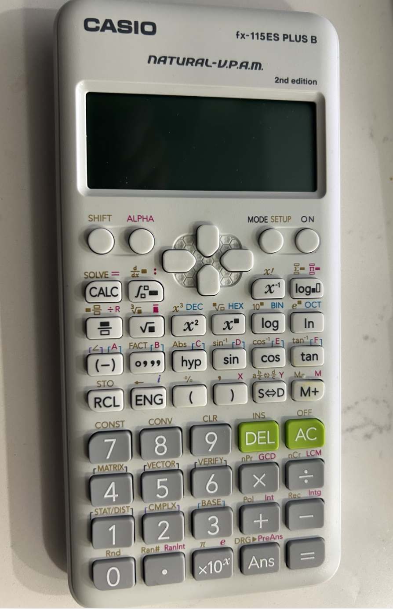

Casio Calculator: How it works?
The Question nobody asked: How does a Casio Calculator work?
A) Casio & first encounter:
In this post, We pick a Casio fx-115ES PLUS B.

Since middle school, I have fond memories of using Casio Calculator and The Casio Watch.
Both impressed me and other middle schoolers in my school located in Tirunelveli.
In the Casio watch model which I owned, you could look at different time-zones. I would frequently share the time in different countries with my friends. It was a fun way to learn about different countries and their time zones. Morever, In some casio watches, you had a calculator within the Watch.
One of my favorite physical activity in Middle school was swimming. I had a small bicycle, and I would ride all the way to Anna Stadium, Tirunelveli. I was about 13 years old. At school, I enjoyed swimming by middle school. My swimming classes were held usually on afternoon by 4 p.m. In late middle school, my classmates and I would all find Swimming class as our favorite class.
My classmates at that age were Muthu Saranji, Praveen, Charanjith Raja, Shah Rukh and girls like Indira, her sister Abirami, Subitha, Aarthy. It was one of the happiest times of my life, and as well for my classmates. We would all jump inside the swimming pool, and after swimming, we would all go to the nearby shop to eat some Samosa and drink some cold drinks.Even in the midst of such happiness, fun and joy, the Casio Watch would remain firmly on our wrists and not break, stop working.
At times, the many of my classmates watches got water internally and stopped working. There were many instances, A watchmaker would open it up and repair it. Throughout late middle school and high school, Some of my friends in class loved the calculator so much; That they would create their own games and play by guessing numbers.
However, it never occurred to me or rest of my classmates, what might it take to build the same one? We were all happy to use it, and we never thought about how it was built. Everyone loved both the Casio Watches & the Calculator.
The Tamil middle–high-school curriculum focused on creating repeating skills like a parrot, rather than technical product building skills? Twelve years of school in Tirunelveli, being forced to memorize pointless esoteric facts, and regurgitate into final exams. The top regurgitators get to make it in the Education-System, and are called Doctors in Tamil Nadu.
I discussed this problem earlier in my Digital LED Clock article — Education of Tamils
And not one throughout my middle school and high school classes, asked two important questions, which is highly relevant to modern world:
- How is this calculator built?
- How does the theory gets deployed into a Consumer Application?
B) The Company’s Product Story:
Well, It never occurred to me or my friends to ask what it would take to build one living in Tirunelveli.
However, It occurred to Tadao Kashio, one of the founders of Casio. Casio was established as Kashio Seisakujo in April 1946 by Tadao Kashio (1917–1993), an engineer specializing in fabrication technology.
His first major product was the yubiwa pipe, a finger ring holding a cigarette so the wearer’s hands stayed free, a hit in impoverished postwar Japan.
In a country rebuilding from rubble, practical ingenuity had a market. Slowly profits were ploughed back into the company, In 1974, Casio released the CASIOTRON, the first wristwatch in the world with an automatic calendar function marking their entry into watches. The F-91W followed in 1989 and became the most sold wristwatch in the world, with annual production of 3 million units.
C) SALES FIGURES:
And what happens, When we see engineering mastered into a beautiful consumer application? Dollars, Numbers.
The Casio F-91W has sold over 100 million units lifetime since 1989, with ~3 million produced annually. The G-Shock line that is popular in North America has sold over 100 million units by 2017. Casio reported a lifetime total of 1.8 billion calculator units sold across all models over 60 years, as of January 2025. Aggregating from available public data from 2009-2023, the annual revenues roughly come around $50 billion USD. Somewhere in Tamil Nadu, one of those 1.8 billion calculators sat on a desk. Nobody with intention asked how it was made.
Casio Calculator
Every modern electrical device has a printed circuit board (PCB), which mechanically supports and electrically connects electronic components using etched copper pathways. The PCB does electrical routing, gives mechanical support and allows for scalable assembly.